← 返回阅读库 · 原论文目录
论文讲解阅读文档 · 表征学习 · v150
An Empirical Study of Training Self-Supervised ViT[2104.02057]
视频时长 00:08:58；讲解文字 4,218 字符；提取讲解画面 25 张。按视频原顺序阅读，每段文字保留时间戳。
文字来自整段视频的自动语音转写，按自然停顿分段，并与 PPT / 论文页面 / 演示画面对齐。未将讲解压缩为摘要；术语、数字和口述公式请结合画面及原论文核对。 阅读稿已校正规范部分明确术语误识别；原始逐字稿和每处修改记录另行保留。
讲解画面为源视频截图（640×360），不是可编辑 PPT 文件。全片按每秒 2 帧扫描内容变化，逐步展开页保留；连续动画保留代表画面。清晰度受源视频限制。
下载完整资料包 · 含离线 HTML、PDF、Word、全部 PPT 画面和字幕。
原论文与材料
An Empirical Study of Training Self-Supervised Vision Transformers · 下载完整 PDF（10 页）
按时间阅读
00:00:00–00:00:30 · 画面 001
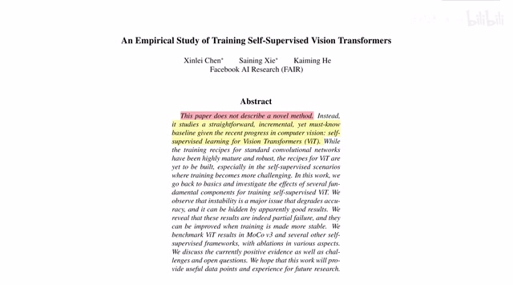
00:00:00–00:00:30 · 画面 001大家好今天我们来迅速说一篇论文 An empirical study of training self-supervised vision transformers 然后这篇论文呢我们先看摘要 This paper does not describe a novel method 其实呢这篇论文就是原来的 MoCo 不管是 V1 还是 V2 它都是用 ResNet 作为这个 backbone 现在呢把里面的 ResNet 换成 Vision Transformers 那么来看它的效果到底是怎么样的所以本篇论文呢其实就是 MoCo V3
那么我们继续来看作者更改了那些东西吧首先左侧是 MoCo 的这个算法那么相对于那么 MoCo v1 和 v2 呢我们之前已经在视频里面介绍过了如果你对这个方面不熟悉呢在这个视频的描述中呢有我们之前视频的链接那么相对于之前呢我们看到一个最大的改动就是没有了这个 memory queue
00:00:30–00:01:52 · 画面 002
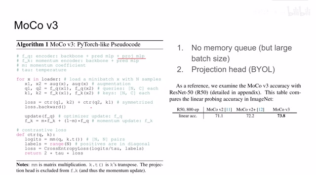
00:00:30–00:01:52 · 画面 002我们原来的 MoCo 在计算 Key 的时候它是维护了一个队列这个队列存储了之前我们计算的所有的 Key 来帮助我们在不扩大 Batch Size 的情况下来提供更多的 Negative Samples 那么这里作者说这个是没有必要的因为我们现在可以训练很大的 Batch Size 了这我都不知道说什么好了那么第二点相当于 v1 v2 的改进呢就是原来我们使用的 query 的 encoder 和 key 的 encodermomentum encoder 他们都使用的是 backbone 加这个 prediction mlp 这个结构的那么在这篇论文中呢作者把这个 byol 的东西就搬进来了我们再加了两层 projection mlp 对吧你的方法很不错但是在我的下一个版本算法中呢这就是我的东西了那么在应用了以上这两项改进之后呢我们在这个 resnet50 作为 backbone 的情况下
来对比一下那相对于之前版本的 MoCo 性能是有一定提升的那么做好热身之后呢我们就开始来准备真正面对我们的 Transformer Encoder 了这里呢作者发现虽然我们在训练 Transformer 的时候呢能够得到性能不错的一个模型但是呢在这个不错的这个模型背后呢其实隐藏了一些不稳定因素它影响着我们训练的过程那么作者为了揭示这个不稳定性呢他使用了这个 KNN Curves
00:01:52–00:03:17 · 画面 003
00:01:52–00:03:17 · 画面 003KNN 就是我在训练完一个 epoch 之后或者是甚至是几个 iteration 之后呢加入几个标记的样本然后呢使用 KNN 把这些然后使用 KNN 测试一下这个 representation 它的表现那么我们看到无论是哪一种 curve 都很明显的在某一个步骤的时候呢会引起这个准确率大幅的下降然后呢再缓缓的提升回来那么这里呢作者研究的 batch sizelearning rate 还有 optimizer 的选择对模型的影响首先看到 batch size 我们可以看到在 batch size 相对较小的时候比如说 2048 这个场合我们的学习的曲线是相对比较平稳的当然这里也有一个掉了一个坑随着 batch size 不断增加我们虽然能够享受到大的 batch size 给我们带来的更多的 contrastive loss 这样的一个优势但是模型是变得更加不稳定了经常的会出现这种断崖式的准确率下降的问题那么再看到 learning rate 同样的也是
我们在选择一个相对较低的 learning rate 的时候呢它呢是比较稳定的但是随着我们 learning rate 的提升不稳定性就开始凸显出来了那么最后呢是 optimizer 这里呢做着尝试了这个 LAMB 和上面我们这个 AdamW 它优化出来的这个结果对比下呢我们就可以作为一个参考那么为什么在我们训练 transformer 这个模型的时候会有这样的问题呢以及这样问题我们是否有办法能够先去克服它呢
00:03:17–00:03:18 · 画面 004
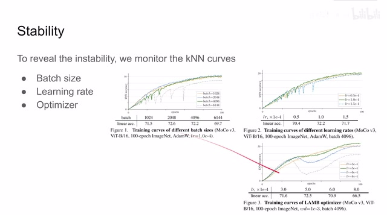
00:03:17–00:03:18 · 画面 00400:03:18–00:03:25 · 画面 005
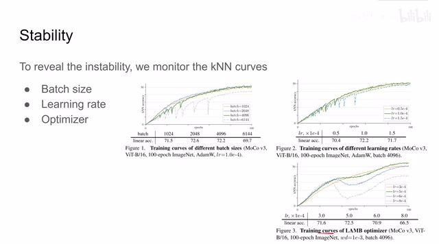
00:03:18–00:03:25 · 画面 00500:03:25–00:03:26 · 画面 006
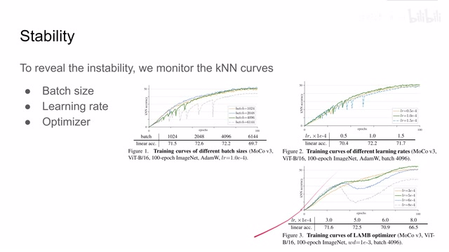
00:03:25–00:03:26 · 画面 00600:03:26–00:03:35 · 画面 007
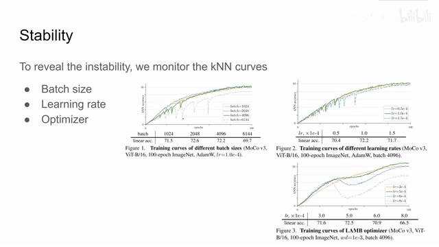
00:03:26–00:03:35 · 画面 007对了，作者首先研究了它的起因，通过观察发现呢，在我们的这个性能出现下降的时候呢，是因为我们突然产生了一个非常大的 gradient，然后这个 gradient 呢，是先从第一层出现，然后在后面几个 iteration 之后呢，到了最后一层，也就是说，这个大的 gradient 的尖刺呢，是从浅的一层传到深的一层
00:03:35–00:04:40 · 画面 008
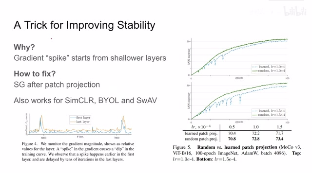
00:03:35–00:04:40 · 画面 008那么更进一步的研究表明呢，这个尖刺呢，是来自于我们一开始从 image patch 到 patch embedding 的时候，我们训练 mlp 所产生的大的梯度的尖刺，那么怎么样规避这个问题呢，作者发现，我直接在这个 patch projection 之后，在这个 patch embedding 之后，把这个梯度停掉，我的前面的这个 mlp 就保持着随机的初始化的状态，那么它训练起来了，这个结果我们可以看到使用随机初始化的这么一个 MLP 作为我们的 patch embedding，它甚至呢，比我们去训练这个 MLP 效果还要好，而且训练过程中呢，也更加的稳定，而且同样的特性呢，我们不仅在这个 MoCo 里面能够观察到，我们发现，哪怕我们是使用了 SimCLR 或者是这个 SwAV，顺便提一句，之前这些东西我们都做过视频，如果感兴趣的话，你可以去前面的视频里面查看，如果我们在这些算法里面都使用 VisionTransformer 这个 model
00:04:40–00:05:34 · 画面 009
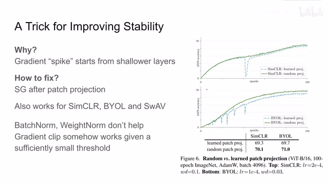
00:04:40–00:05:34 · 画面 009那么同样的，他们也会出现这个性能的突然的下降，这个问题，但是呢，只要是你把前面的 gradient 停掉，使用一个随机初始化的 MLP 直接就作为我们的 patch embedding，那么他的这个训练过程呢，就变得相对稳定，哎，这其实是一个很有意思的发现，那么作者呢，这里还尝试了使用 batch normalizationweight normalization 等等，但是这些呢，都不能改变上面遇到的这些问题那么作者还试了 gradient clip，就是相当于把这个 gradient 给它限制到一定程度，那么作者发现，当我们把这个 gradient 给它限制到足够小，那么也能够说达到平稳训练的效果，但是你想，这个最极端的情况，把它这个限制收得越来越小，其实不就是我们之前说的这个 stopgradient，就停止去训练前半这一块，它的本质呢，跟我们这个 stopgradient 是一样的，作者认为呢，我们现在只是一个治标不治本的方法
00:05:34–00:05:35 · 画面 010
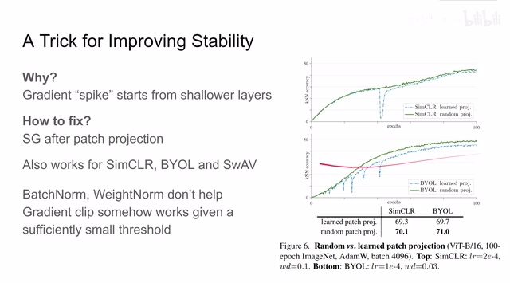
00:05:34–00:05:35 · 画面 01000:05:35–00:06:10 · 画面 011
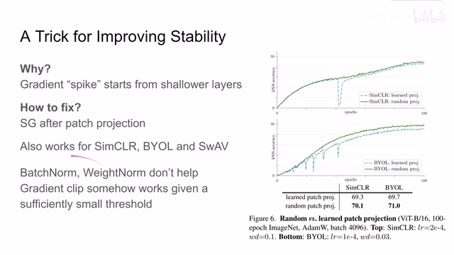
00:05:35–00:06:10 · 画面 011但是呢具体我们有没有更好方法能从原理上克服这个问题还是有待进一步的研究的同时呢我个人来说也很好奇你前面如果是用这个 resnet50 用他提的 image embedding 对吧用 vgg 这样的网络提的 embedding 用一个 convolutional neural network 提的一个 embedding 他如果作为 transformer input 作为他的 token 效果会怎么样呢这个呢我们会继续关注看后面有没有人做这个方向的东西那么最后呢我们直接看到结果
00:06:10–00:07:06 · 画面 012
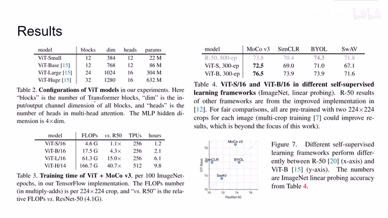
00:06:10–00:07:06 · 画面 012这里呢，是几种 transformer 的配置，他们的计算量相对于 resnet50 他们的这个对比，还有 tpu 训练的时间啊，这都是钱，这里呢，是对比了使用了不同的 backbone model 和不同的 learning frameworks 他们的这个对比，可以看到在借了 BYOL 里面的这个projection 之后呢，还有我们之前说到的这个拿掉这个队列这个改进之后呢，MoCo 的方法在之前的这几个 backbone 里面是 outperform 的其他这些方法的，那么这张图呢，它的横轴呢，是使用 resnet50 来做的这个准确率
纵轴是使用 Vision Transformer 的方法来做出来的准确率，可以看到像 SimCLR 还有 MoCo 它们都是比较偏爱 Vision Transformer 的方法，而像 BYOL SwAV 这两种方法它们对 Backbone 基本没有太大区别，它们的位置是比较贴近中线的，好的，那么在此基础上作者又汇报了一些消融实验，看到像 position embedding 别学了还是使用显式的 sin-cos 这种效果得到最好
00:07:06–00:07:55 · 画面 013
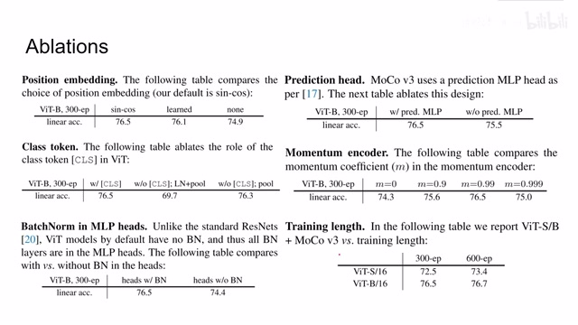
00:07:06–00:07:55 · 画面 013然后呢，不加 embedding 当然是不可以的。对于这 class token，之前有朋友也在问了，说如果没有 class token 行不行？那显然呢，也是不合适的，性能呢是大幅度下降的。那么即便你把所有的 token 都给它 pool 起来，集合起来，那么你的性能的表现呢，也是不如单独设一个 class token 来的好。那么还有这个 MLP head 里面的 batch normalization 呀，prediction head 的影响，就是从 BYOL 借过来的，性能的影响。
看到还是有一点提升的。我们的 momentum 的应该更新多快，还有包括训练的时长等等等等。而感兴趣的朋友呢，可以进一步的去看原文，他的实验的相关的说明。那最后呢，既然我们有了 transformer，那不免要和这个 resnet base 的这些方法呢，在参数量上还有我们的准确率上，这个呢就供大家参考。那么最后呢，作者当然也测试了这个 transfer learning，就是我在 ImageNet 上 pretrain，然后到其他的数据上 fine-tuning。
00:07:55–00:08:03 · 画面 014
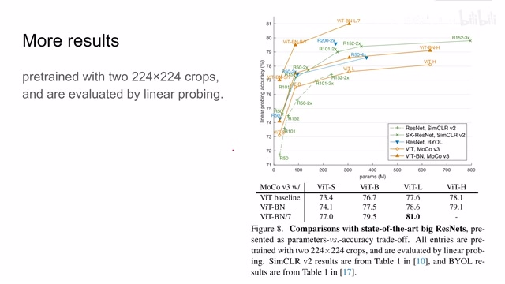
00:07:55–00:08:03 · 画面 01400:08:03–00:08:04 · 画面 015
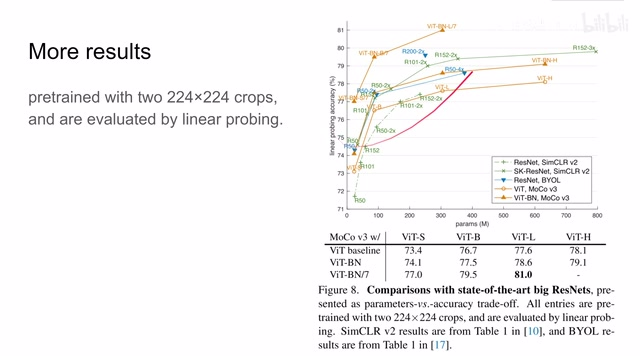
00:08:03–00:08:04 · 画面 01500:08:04–00:08:05 · 画面 016
00:08:04–00:08:05 · 画面 01600:08:05–00:08:11 · 画面 017
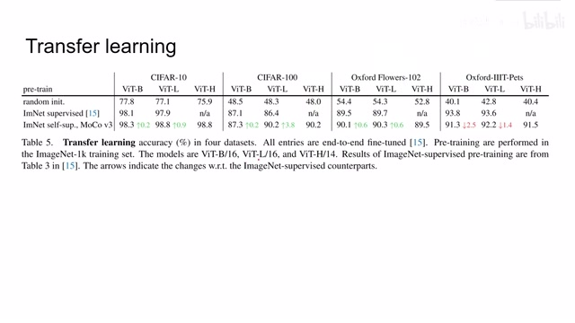
00:08:05–00:08:11 · 画面 01700:08:11–00:08:13 · 画面 018
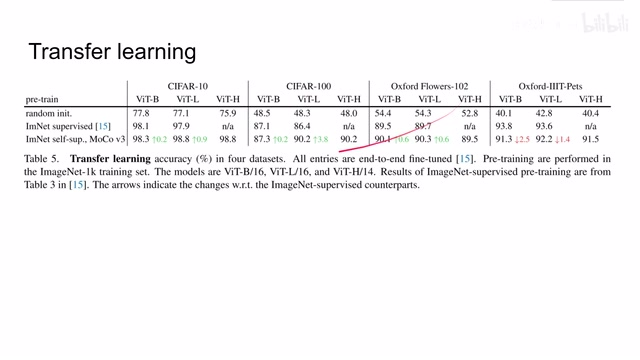
00:08:11–00:08:13 · 画面 018可以看到大部分情况下，使用 self-supervised 做 pre-train，然后在另一个数据集上做 fine-tuning，它的性能是比使用 supervised 方法做 pre-train，然后在其他地方做 fine-tuning，大部分情况下是有改善的。当然在宠物数据集下面性能有所降低。好的，那么总的来说，本文的核心思想就是改进了这两点。
00:08:13–00:08:23 · 画面 019
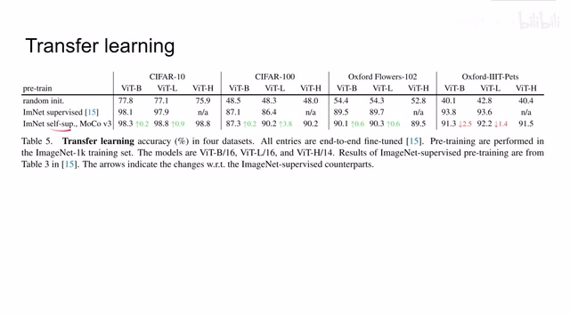
00:08:13–00:08:23 · 画面 01900:08:23–00:08:24 · 画面 020
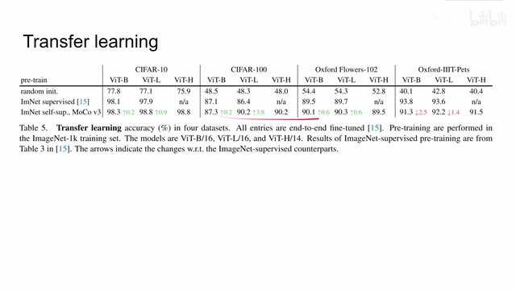
00:08:23–00:08:24 · 画面 02000:08:24–00:08:28 · 画面 021
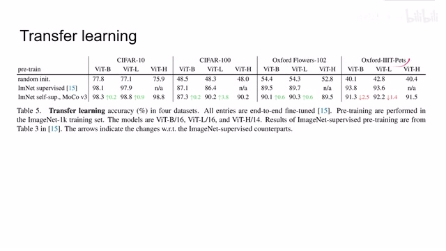
00:08:24–00:08:28 · 画面 02100:08:28–00:08:35 · 画面 022
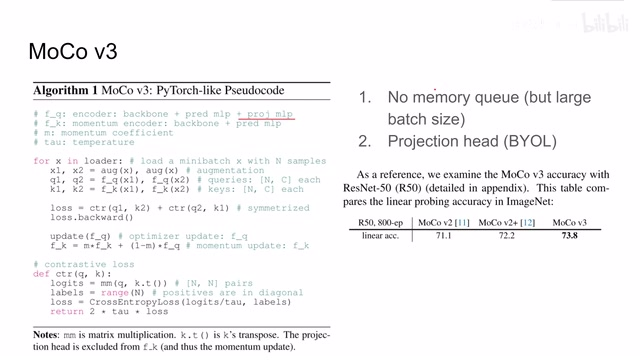
00:08:28–00:08:35 · 画面 022然后呢，做了关于 Vision Transformer 大量的实验，帮我们揭示了在训练过程中这个不稳定的问题，而且为我们提供了一个非常简单的克服这个不稳定问题的这么一个方案，也就是先不让他去学我们的 Image Embedding。那么我们还是期待在这个文章上出发做的后续的工作吧。好的，那么以上就是我对这篇论文的简单的分析，那么感谢您的收看，再见。
00:08:35–00:08:42 · 画面 023
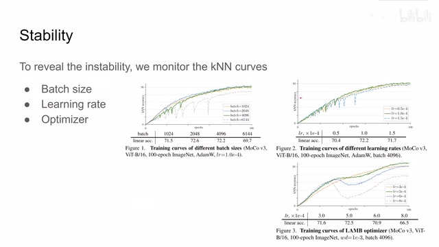
00:08:35–00:08:42 · 画面 02300:08:42–00:08:58 · 画面 024
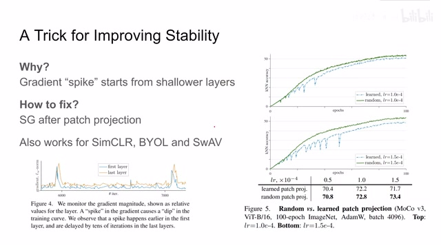
00:08:42–00:08:58 · 画面 02400:08:58–00:08:58 · 画面 025
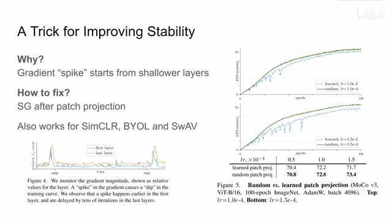
00:08:58–00:08:58 · 画面 025转写与来源说明 · 0 个自动复核提示
保留 21 个原始语音片段，0 个片段触发自动复核提示。提示仅用于定位可能的术语、重复或识别问题，不等于已确认错误。
讲解画面为源视频截图（640×360），不是可编辑 PPT 文件。全片按每秒 2 帧扫描内容变化，逐步展开页保留；连续动画保留代表画面。清晰度受源视频限制。
原视频：paper/合集_2026-10-16_表征学习/[论文简析]An Empirical Study of Training Self-Supervised ViT[2104.02057].mp4
SHA-256：2b178a8be64147e4c2a475caa345c1a66538cc85d287b3bcd66546bd1f304050
全文按视频语音与画面制作。原论文可从上方链接下载；完整资料包保留全文、原始逐字稿、字幕和校对记录。